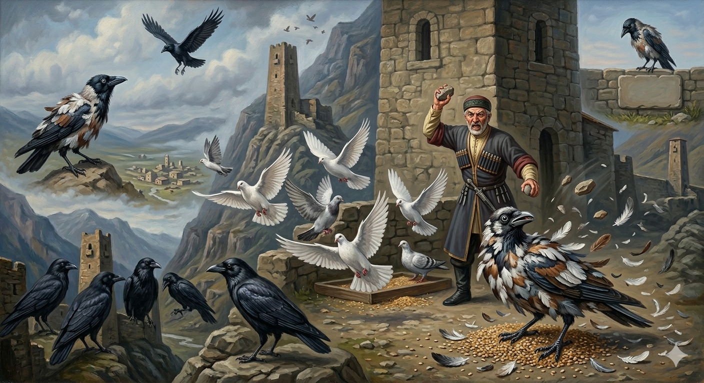

И.А. Дахкильгов. Хьехаме дувцарш - поучительные рассказы-притчи.
И.А. Дахкильгов. Хьехаме дувцарш - поучительные рассказы-притчи. Из ингушского фольклора.

Цхьаннахьа йоацаш йиса къайг
Наха кхокхарч кхоабаш бӀарга а дайна, ер моцал сенна юъ аз, аьнна, кхокхарчашта юкъе яха лаьрхӀад цхьан къайго. Кхокхий бедаргаш лохьа а яь, лотараца уж шийна ӀотӀа а лотаяь, кхокхарчашта юкъе яьннай къайг. Царца цхьана яьжаш лелаш, сигала гӀолла дӀайода цхьа къайг шийна бӀаргаейча, ер кхокхах йирза къайг "варкъ" аьнна, Ӏаьхай. Циггач кхокхарчий дас гарзаш йийтта, эккхаяьй из къайг, кхы хьаюхейоагӀардгйоацаш. Бедаргаш дӀаяха елча, къайго лелочох хӀама хиннадац - лотор чӀоагӀа хиннад. Ший къайгашта юкъе яхай ер. Цар а эккхаяьй, кхокха тхона юкъе товргбац, аьнна. Иштта йисай къайг, дехьа а сехьа а йоацаш.
РУССКИЙ
Неприкаянная ворона
Увидела ворона, что люди кормят голубей. Решивши, зачем мне жить впроголодь, ворона насобирала голубиных перьев, облепила ими себя и пошла в голубиную стаю. Пасется она среди них, у вдруг увидела пролетающую в небе ворону. Забывшись, ворона закаркала. Хозяин голубей, узнав воронью хитрость, камнями отогнал ворону и более не подпускал ее к голубям. Ворона решила отодрать с себя голубиные перья, но клей оказался крепким и перья никак не отдирались. Пошла ворона к своим воронам. А они тоже, сказавши, что голубю нечего делать среди ворон, прогнали ее. Так в одиночестве и осталась неприкаянная ворона.
ENGLISH
The Restless Crow
A crow saw people feeding the pigeons. Deciding that it did not want to live on a meagre diet, the crow gathered some pigeon feathers, covered itself with them and joined the flock. While grazing with them, it suddenly spotted another crow flying across the sky. Forgetting itself, the crow cawed. Realising the crow's trickery, the owner of the pigeons drove the crow away with stones and would not let it near the pigeons again. The crow tried to tear the feathers off, but the glue was too strong. The crow went to its fellow crows. But they, too, drove it away, saying that a pigeon had no place among crows. And so the restless crow was left all alone.
НОХЧИЙН
Цхьанхьа а йоцуш йисин къиг
Наха кхокхий кхобуш бӀаьрга а дайна, хӀара мацалла стенна йуу ас, аьлла, кхокхешна йукъе йаха сацам бина цхьана къийго. Кхокхийн пелагаш лахьа а йина, уьш шена тӀе а летийна, кхокхешна йукъе йаьлла къиг. Цаьрца цхьана йежаш лелаш, стиглахула дӀайоьду цхьа къиг шена гича, хӀара кхокханах йирзина къиг "варкъ" аьлла, Ӏийхин. Эццахь кхокхийн дас гӀорзанаш йиттина, эккхийна и къиг, кхин схьайухайогӀур йоцуш. Пелагаш дӀайаха йоьлча, къийго лелочух гӀуллакх ца хилла - латор чӀогӀа хилла. Шен къийгашна йукъе йахна хӀара. Цара а эккхийна, кхокха тхуна йукъехь товр бац, аьлла. Иштта йисна къиг, дехьа а сехьа а йоцуш.
ПОГОВОРКИ
"Ак" яхаш яьгӀа йоӀ ший даь-цӀагӀа ийсай. - Девушка, постоянно твердившая "нет", осталась старой девой. Даь-цӀагӀа ца товр, маьр-цӀагӀа товргъяц. - Строптивая девушка в замужестве не уживется. ЗагӀашка яьнна гаргало яц, дарбашка даьнна дегӀ а дегӀ дац. - Родство, держащееся на деньгах, - не родство; тело, держащееся на лекарствах, - не тело. Хьовла санна мерза ма хила, - тӀа мел кхаьчачо вуаргва хьо; аьрга сом санна къахьа ма хила, - царг мел техачо дӀакхоссаргва хьо. - Не будь сладким, как халва, - иначе все будут есть тебя; не будь горьким, как недозрелый фрукт, - все будут выбрасывать тебя. Дежа даьтта санна хила еза йоӀ. - Девушка должна быть чиста, как топленое масло. Ер деррига дуне дизза уллача лайх бий бизал мара боаца дом бала мегаргбацар. - За весь снег, что на этом свете, нельза отдать и горсти пыли. Иттанена Ӏа дикадар дича, царех ийссане хьона юха во дарах, дикадар дергдола цаӀ коравоагӀаргва хьона из ийссе во дӀадоаккхаш. - Сделай добро десятерым. Если в ответ девять из них сделают тебе зло и лишь один - добро, это одно добро одолеет те девять зол. Йоккхача шахьара хезад дег чура доагӀа дош. - От души сказанное услышал весь город. Кера бӀена чу къайг тайнаяц, къайга бӀена чу кер а тайнадац. - Гнездо сокола не для вороны, воронье гнездо не для сокола. Когаша наьна шамарах гаьна воаккх. - Ноги далеко уводят человека от материнской груди. Кхали маӀеи, шин сага, рузкъа вӀаший хьожадар духьа, йоах, Далла, сов дукха лелаш, ийс аьшка маьчи йохаяьй. - Говорят, чтобы соединить судьбу мужчины и женщины, богу Дяле пришлось износить девять железных чувяк. Кхоана хургъя яхача котамал таханар цхьа фуъ тол. - Лучше одно яичко сегодня, чем курица, обещанная на завтра. Къаденнача ломах пхьу хиннаб. - Постаревший барс становится собакой. Къинош доахка рузкъа хьарама да. - Неправедно нажитое богатство греховно. Маха биллал саг хоаставича, бӀарга хоаваллал талх из. - Когда человека похвалят на толщину иголки, он заметно портится. Мукъа йитача говро ца иййттай, кулг тӀадоацаш йисача сесага харцахьа йорт кхихьай. - Одичавший (бесхозный) конь становится кусачим, без твердой мужской руки жена становится шалопутной. Наьха вонна дакъа ца хиннар ший вон тӀа ше висав. - Кто не сочувствовал чужому горю, остался один на один со своим. Наьха сагӀагӀа сатийсар пхьераза вижав. - Надеявшийся на подаяние лег спать, не поужинав. Ноаной берригаш дика хилча, хала оамал йола уст-ноаной мичара хьахул-те? - Если все матери хорошие, откуда же берутся злые тещи? Сайранга сатувс мецача берзалоша, Ӏуйранга сатувс Ӏаьржача хьаргӀаша. - Голодные волки темноты дожидаются, а черные вороны утра не дождутся. Тешаме воацар хьа доттагӀа вац. - Тот не друг, кому нельзя довериться. "Хац" ма ала, "лац" ала. - Не говори "не умею", а говори "не хочу". Шув йисте гӀертача истарга виро аьнад, йоах: "Ма гӀерта берда йисте, - са ги боагӀаргба хьо". - Пасшемуся у обрыва быку ишак сказал: "Не тянись к пропасти, - ляжешь на мою спину". Эхь-эздел къел-моцал йолча лехац. - Благородства не ищет там, где царят голод и нищета.